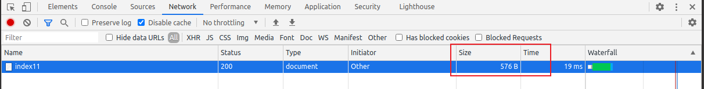

配置文件
在django中默认的核心包里面存在了一个全局默认配置文件django/conf/global_settings.py, 同时在开发者构建项目的时候, 也生成了一个全局项目配置文件在主应用目录下/settings.py文件中。
这两个配置文件,在django项目运行时, django会先加载了global_settings.py中的所有配置项到django.conf.settings对象中作为配置项存在, 接着加载主应用目录下/settings.py的配置项，所以settings.py中填写的配置项的优先级会高于global_settings.py的默认配置。
文档：https://docs.djangoproject.com/zh-hans/4.2/ref/settings/
xxxxxxxxxx1621"""2Django settings for djdemo project.34Generated by 'django-admin startproject' using Django 4.2.56For more information on this file, see7https://docs.djangoproject.com/en/4.2/topics/settings/89For the full list of settings and their values, see10https://docs.djangoproject.com/en/4.2/ref/settings/11"""1213from pathlib import Path141516# Build paths inside the project like this: BASE_DIR / 'subdir'.17# BASE_DIR代表了项目一个参考根路径，是当前文件的父级的父级目录路径，主要作用是提供给整个django项目进行路径拼接的。18BASE_DIR = Path(__file__).resolve().parent.parent19# 项目中一般我们会使用大写的变量来表示一个常量，所谓常量就是在开发中，用于表示一些固定数据的标记符，这种标记符，在其他语言中是基本语法来的，但是在python中并没有常量，20# 所以，就有了一些开发者声明一些大写的变量用于充当常量，常量一经定义，不能赋值。21# 因此，我们作为开发人员，就要遵守这种约定，以后如果希望项目中的一些数据不要被人修改，则可以声明成常量。22# django中的配置被强制要求一定要大写！！！否则django不识别2324# Quick-start development settings - unsuitable for production25# See https://docs.djangoproject.com/en/4.2/howto/deployment/checklist/2627# 秘钥， 用于提供给加密算法的秘钥28# 加密： 哈希串/序列串 = 加密算法(原始密码, 秘钥)29# 验证： 新哈希串 = 加密算法(原始密码, 秘钥)， 新哈希串==哈希串，则表示原始密码正确30# SECURITY WARNING: keep the secret key used in production secret!31SECRET_KEY = 'django-insecure-pz)=zkl_m9bgi!!t)ge&=2hmbg^s=!vr=sbb-nb)dr&77)f8mf'3233# SECURITY WARNING: don't run with debug turned on in production!34# 在线下开发，DEBUG = True，django会基于测试服务器提供静态资源（图片，css，js）的访问，当服务端出错，会显示详尽错误信息35# 在线上运营，DEBUG = False，django不会基于测试服务器提供静态资源访问，当服务端出错，不会显示任何关于系统的错误信息，仅仅提供错误页面36DEBUG = True3738#设置当前django项目允许客户端通过哪些地址访问到django项目，"*"表示服务端的任意地址39# ALLOWED_HOSTS = ["*"]40ALLOWED_HOSTS = []4142# Application definition43# django注册的子应用列表[用于数据库操作，缓存，日志，admin管理]44INSTALLED_APPS = [45 'django.contrib.admin', # admin站点的子应用46 'django.contrib.auth', # django内置的登录认证功能47 'django.contrib.contenttypes', # 内容类型管理48 'django.contrib.sessions', # session功能49 'django.contrib.messages', # 信号、消息功能的实现50 'django.contrib.staticfiles', # 静态文件浏览服务5152 'user', # 子应用的字符串导包路径53]545556# 中间件、全局钩子、拦截器57# 中间件，MIDDLEWARE，就是一个django提供给开发者用于在http请求和响应过程中，进行数据拦截的插件系统/钩子系统58# 用于进行拦截请求，或者数据格式转换，权限判断5960MIDDLEWARE = [61 'django.middleware.security.SecurityMiddleware',62 'django.contrib.sessions.middleware.SessionMiddleware',63 'django.middleware.common.CommonMiddleware',64 # 'django.middleware.csrf.CsrfViewMiddleware',65 'django.contrib.auth.middleware.AuthenticationMiddleware',66 'django.contrib.messages.middleware.MessageMiddleware',67 'django.middleware.clickjacking.XFrameOptionsMiddleware',68]6970# django项目的默认总路由模块71ROOT_URLCONF = 'djdemo.urls'7273# html模板引擎配置74TEMPLATES = [75 {76 'BACKEND': 'django.template.backends.django.DjangoTemplates',77 'DIRS': [], # 模板引擎目录78 'APP_DIRS': True,79 'OPTIONS': {80 'context_processors': [81 'django.template.context_processors.debug',82 'django.template.context_processors.request',83 'django.contrib.auth.context_processors.auth',84 'django.contrib.messages.context_processors.messages',85 ],86 },87 },88]8990# web应用程序的模块91WSGI_APPLICATION = 'djdemo.wsgi.application'929394# Database95# https://docs.djangoproject.com/zh-hans/4.2/ref/settings/#databases96# 数据库配置97DATABASES = {98 'default': {99 'ENGINE': 'django.db.backends.sqlite3',100 'NAME': BASE_DIR / 'db.sqlite3',101 }102}103104105# Password validation106# https://docs.djangoproject.com/en/4.2/ref/settings/#auth-password-validators107# 密码验证类108AUTH_PASSWORD_VALIDATORS = [109 {110 'NAME': 'django.contrib.auth.password_validation.UserAttributeSimilarityValidator',111 },112 {113 'NAME': 'django.contrib.auth.password_validation.MinimumLengthValidator',114 },115 {116 'NAME': 'django.contrib.auth.password_validation.CommonPasswordValidator',117 },118 {119 'NAME': 'django.contrib.auth.password_validation.NumericPasswordValidator',120 },121]122123124# Internationalization125# https://docs.djangoproject.com/en/4.2/topics/i18n/126# 语言127LANGUAGE_CODE = 'zh-hans'128# 时区129TIME_ZONE = 'Asia/Shanghai'130# 是否开启国际化本地化功能131USE_I18N = True132# 是否启用时区转换133# USE_TZ的值为False则django会基于TIME_ZONE的时区来转换时间，否则USE_TZ的值为True，则采用基于操作系统时间来转换时间134USE_TZ = True135136137# Static files (CSS, JavaScript, Images)138# https://docs.djangoproject.com/en/4.2/howto/static-files/139# 静态文件的访问url路径140STATIC_URL = 'static/'141142# Default primary key field type143# https://docs.djangoproject.com/en/4.2/ref/settings/#default-auto-field144# 默认情况下，django中的数据表的主键ID的数据类型 bigint145DEFAULT_AUTO_FIELD = 'django.db.models.BigAutoField'146147148# session存储引擎核心类149SESSION_ENGINE = "django.contrib.sessions.backends.file"150151# django的全局默认配置文件：django.conf.global_settings152# 保存到文件: django.contrib.sessions.backends.file153# 保存到数据库: django.contrib.sessions.backends.db # 需要配置数据库连接154# 保存到缓存中: django.contrib.sessions.backends.cache # 需要配置缓存连接155156# session存储目录[如果不设置,则默认是系统的缓存目录]157# 版本小于3.0的django 通过以下代码配置158# SESSION_FILE_PATH = os.path.join(BASE_DIR, "session")159160# 版本大于或等于3.0通过以下配置161SESSION_FILE_PATH = BASE_DIR / "session_path" # 路径拼接162
Django 采用了 MVT 的软件设计模式组织代码结构的，即模型（Model），视图（View）和模板（Template）。
M，Model，模型，是一个类或者函数，里面的代码就是用于完成操作数据库的。
V，View，视图，是一个类或者函数，里面的代码就是用于项目功能逻辑的，一般用于调用模型来获取数据，获取到的数据通过调用HTML模板返回给客户端。
T，Template，模板，是一个保存了特殊语法的前端html内容文件，里面的代码就是用于展示给客户端的页面效果。
这个MVT模式并非django首创，在其他的语言里面也有类似的设计模式MVC，甚至可以说django里面的MVT事实上是借鉴了MVC模式衍生出来的。
M，Model，模型，是一个类或者函数，里面的代码就是用于完成操作数据库的。
V，View，视图，里面的代码就是用于展示给客户端的页面效果。可以是一个具有特殊语法的HTML文件，也可以是一个数据结构。
C，Controller，控制器，是一个类或者函数，里面的代码就是用于项目功能逻辑的，一般用于调用模型来获取数据，获取到的数据通过调用HTML视图文件返回给客户端。
模板
在工作中为了更好的展示数据给用户，所以都会使用html+css+js实现网页排版效果，但是很多开发人员并不能做到既擅长服务端开发又擅长前端开发的，当然，即便有，那这个开发人员的工资也不会低，而且同等条件下，1个人干活是怎么也比不过2个人的。所以，怎么让服务端的数据更好的展示到客户端，这就成为问题了。
模板引擎是一种可以让开发者把服务端数据填充到html网页中完成渲染效果的技术。它实现了把前端代码和服务端代码分离的作用，让项目中的业务逻辑代码和数据表现代码分离，让前端开发者和服务端开发者可以更好的完成协同开发。
Django框架中内置了web开发领域非常出名的一个DjangoTemplate模板引擎（简称：DTL）。
DTL官方文档: https://docs.djangoproject.com/zh-hans/4.2/topics/templates/
要在django框架中使用模板引擎把视图中的数据更好的展示给客户端，需要完成3个步骤：
在项目配置文件settings.py中指定保存模板文件的模板目录。
一般模板目录都是设置在项目根目录或者主应用目录下。
在视图中基于django提供的渲染函数绑定模板文件和需要展示的数据变量
在模板目录下创建对应的模板文件，并根据模板引擎内置的模板语法，填写输出视图传递过来的数据。
配置模板目录
在当前项目根目录下创建了模板目录templates. 然后在settings.py, 模板相关配置，找到TEMPLATES配置项，填写DIRS设置模板目录。
xxxxxxxxxx181# html模板引擎配置2TEMPLATES = [3 {4 'BACKEND': 'django.template.backends.django.DjangoTemplates',5 'DIRS': [ # 配置HTML模板文件的存储目录[目录是手动创建，如果目录不存在，则会报错]6 BASE_DIR / "templates",7 ],8 'APP_DIRS': True,9 'OPTIONS': {10 'context_processors': [11 'django.template.context_processors.debug',12 'django.template.context_processors.request',13 'django.contrib.auth.context_processors.auth',14 'django.contrib.messages.context_processors.messages',15 ],16 },17 },18]
为了方便接下里的演示内容，我这里创建创建一个新的子应用tem
xxxxxxxxxx11python manage.py startapp temsettings.py，注册子应用，代码：
xxxxxxxxxx141# Application definition2# django注册的子应用列表[用于数据库操作，缓存，日志，admin管理]3INSTALLED_APPS = [4 'django.contrib.admin', # admin站点的子应用5 'django.contrib.auth', # django内置的登录认证功能6 'django.contrib.contenttypes', # 内容类型管理7 'django.contrib.sessions', # session功能8 'django.contrib.messages', # 信号、消息功能的实现9 'django.contrib.staticfiles', # 静态文件浏览服务1011 'user', # 子应用的字符串导包路径12 'tem', # 开发者创建的子应用，这填写就是子应用的导包路径13]14在tem子应用目录下创建urls.py子路由文件，代码如下：
xxxxxxxxxx71"""tem子应用路由"""2from django.urls import path, re_path3from . import views45urlpatterns = [67]总路由加载子应用路由,urls.py，代码：
xxxxxxxxxx101from django.contrib import admin2from django.urls import path,include3urlpatterns = [4 path('admin/', admin.site.urls),5 # path("路由前缀/", include("子应用目录名.路由模块"))6 path("book/", include("home.urls")),7 path("student/", include("demo.students.urls",namespace="stu")),8 path("users/", include("users.urls")),9 path("tem/", include("tem.urls")),10]
视图加载模板
tem/views.py，代码：
xxxxxxxxxx241from django.shortcuts import render234def index(request):5 """显示模板"""6 # render函数实现3个功能：7 # 1. 识别查找模板目录下对应的HTML文件8 # 2. 读取HTML文件内容，替换特殊的模板语法9 # 3. 实例化response对象10 response = render(request, "index.html")11 print(response) # <HttpResponse status_code=200, "text/html; charset=utf-8">12 print(response.content.decode()) # render读取模板文件以后，生成的HTML文档内容13 return response141516def index1(request):17 """视图中传递数据到模板中显示"""18 title = "我的网页标题"19 author = "moluo"20 # 模板引擎可以把HTML模板中的特殊变量语法替换成真实数据，真实数据通过视图中的context传递进去21 # response = render(request, "index1.html", context={"title": title,"author": author})22 response = render(request, "index1.html", locals())23 print(response.content.decode())24 return responsetemplates/index.html，代码：
xxxxxxxxxx111<html lang="en">3<head>4 <meta charset="UTF-8">5 <title>{{ title }}</title>6</head>7<body>8 {# django模板中的注释内容，提供给开发者看的 #}9 作者：{{ author }}10</body>11</html>完成了上述3个步骤以后，我们就可以把视图注册到子路由中，tem.urls.py，代码：
xxxxxxxxxx81"""tem子应用路由"""2from django.urls import path, re_path3from . import views45urlpatterns = [6 path("index", views.index),7 path("index1", views.index1),8]在浏览器进行访问：http://127.0.0.1:8000/tem/index1/
render函数内部本质[了解]
tem/views.py，代码：
xxxxxxxxxx241from django.shortcuts import render2from django.template.loader import get_template3from django.http.response import HttpResponse4# Create your views here.5def index(request):6 """模板引擎的基本使用"""7 data = {}8 title = "模板引擎的基本使用"9 data["title"] = title10 # return render(request, "tem/index.html", context={"title":title})11 # return render(request, "tem/index.html", data)12 # return render(request, "index.html", data)13 # 1. 初始化模板,读取模板内容,实例化模板对象14 # 基于settings.py中配置的模板引擎获取DIRS配置的模板文件，转换成Template模板对象15 # get_template会从项目配置中找到模板目录，我们需要填写的参数就是补全模板文件的路径16 template = get_template("index.html")17 # 调用模板对象提供的render函数，把本次客户端的请求对象和视图中数据data传参到模板文件中，进行渲染18 # 将来如果要对模板中的内容进行数据缓存[cache]，可以对content进行保存起来，将来如果直接读取content的话，19 # 则django就不需要操作数据库或者进行数据渲染，因为模板渲染的过程就是正则替换的过程。20 # 2. 识别context内容, 和模板内容里面的标记[标签]替换,针对复杂的内容,进行正则的替换21 # render中完成了变量替换成变量值的过程，这个过程使用了正则。22 content = template.render(data, request)23 # 3. 通过response响应对象,把替换了数据的模板内容返回给客户端24 return HttpResponse(content)
相关扩展
xxxxxxxxxx221# 1. DTL模板文件与普通html文件的区别在哪里？2 DTL模板文件是一种带有特殊语法的HTML文件，这个HTML文件可以被Django编译，可以从视图中传递参数进去，实现数据动态化。在编译完成后，生成一个普通的HTML文件，然后发送给客户端。34 5# 2. 开发中，我们一般把开发中的文件分2种，分别是静态文件和动态文件。6静态文件，数据保存在当前文件，不需要经过任何处理就可以展示出去。7 普通html、css、js等文件，图片，视频，音频等这一类文件叫静态文件。8动态文件，数据并不在当前文件，而是要经过服务端或其他程序进行编译转换才可以展示出去。9 编译转换的过程往往就是使用正则或其他技术把文件内部具有特殊格式的变量转换成真实数据。10 动态文件，一般数据会保存在第三方存储设备，如数据库中。11 django的视图，模板文件，就属于动态文件。1213# 3. 除了render，django还提供了一个render_to_string函数 ，可以将函数结果提供给 HttpResponse直接返回给客户端。14# 代码参考如下：15from django.http.response import HttpResponse16from django.template.loader import render_to_string17def index(request):18 # 要显示到客户端的数据19 name = "hello DTL!"20 # render_to_string 在工作中，有时候可用于缓存优化。21 tpl_content = render_to_string('index.html', {"name":name})22 return HttpResponse(tpl_content)render_to_string 是工作中，经常用于缓存优化的工具函数，非常重要，但是少用。tem/views.py，代码：
xxxxxxxxxx351import os.path23from django.http import HttpResponse4from django.shortcuts import render5from django.conf import settings67# Create your views here.8def index(request):9 """在视图中调用模板引擎提供的渲染函数实现前后端不分离"""10 # data = {"name": "杨戬", "age": 1500}11 # # return render(request, template_name="index.html", context=data)12 # return render(request, "index.html", data)1314 # name = "杨戬"15 # age = 1616 # return render(request, "index.html", locals())1718 name = "杨戬"19 age = 162021 # 判断是否有缓存页面，如果有缓存页面，就加载缓存页面22 from django.template.loader import get_template23 template_name = "index.html"24 if os.path.isfile(str(settings.BASE_DIR / "cache" / template_name)):25 with open(f"cache/{template_name}", "r") as f:26 content = f.read()27 else:28 print("走了数据库！")29 # 获取模板引擎对象30 template = get_template("index.html")31 # 使用模板引擎对象的渲染函数来对模板进行渲染32 content = template.render(locals(), request)33 with open(f"cache/{template_name}", "w") as f:34 f.write(str(content))35 return HttpResponse(content)
模板语法
Django的DTL或jinja2模板引擎提供的语法无非4种格式不同的语法，分别是变量，注释，标签，过滤器
xxxxxxxxxx231"""变量"""2{{ 变量 }}34"""注释"""5{# 单行注释 #}6{% comment %}7 多行注释8{% endcomment %}9 10"""标签"""11{% 标签名 %} # 单标签12{% 开始标签 %} {% 结束标签 %} # 双标签1314"""过滤器"""15# 本质就是函数[可以是python函数，也可以是开发者自定义函数]，常用语在变量或者标签16# 单个无参数过滤器，变量默认作为过滤器的第1个参数，过滤器中return的内容作为结果被输出17{{ 变量 | 过滤器 }}18# 单个有参数过滤器，参数1是变量，英文冒号后面跟着的参数按顺序依次使用英文逗号排列19{{ 变量 | 过滤器:参数2 }}20# 多个无参数过滤器，每个 | (竖杠) 左边的内容作为右边过滤器的默认第1个参数21{{ 变量 | 过滤器1 | 过滤器2 | 过滤器3 | ..... }}22# 多个有参数过滤器，每个过滤器的参数1是 竖杠作为结果。最后一个过滤器返回的结果被输出23{{ 变量 | 过滤器1:参数2 | 过滤器2:参数2 | .... }}
变量
视图代码，tem/views.py，代码：
xxxxxxxxxx181def index3(request):2 """模板引擎的语法"""3 from django.conf import settings4 import time5 num1 = 1006 num2 = 3.147 name = "xiaoming"8 data1 = {1,2,3}9 data2 = (1,2,3,4)10 data3 = [1,2,3,4]11 data4 = {"name":"xiaohui","age": 17}12 data5 = settings13 book_list = [14 {"id": 10, "price": 9.90, "name": "python3天入门到挣扎", },15 {"id": 11, "price": 19.90, "name": "python7天入门到垂死挣扎", },16 ]17 return render(request, "index3.html", locals())18模板代码，templates/index3.html：
xxxxxxxxxx361<html lang="en">3<head>4 <meta charset="UTF-8">5 <title>Title</title>6</head>7<body>8{# 单行注释#}9{% comment %}10 多行注释11 多行注释12 多行注释13{% endcomment %}1415<p>num1={{ num1 }}</p>16<p>num2={{ num2 }}</p>17<p>name={{ name }}</p>18<p>data1={{ data1 }}</p>19<p>data2={{ data2 }}</p>20<p>data2={{ data2.0}}</p>21<p>data2={{ data2.3}}</p>22<p>data3={{ data3 }}</p>23<p>data3={{ data3.1 }}</p>24<p>data3={{ data3.3 }}</p>25<p>data4={{ data4 }}</p>26<p>data4={{ data4.name }}</p>27<p>data4={{ data4.age }}</p>28<p>data5={{ data5 }}</p>29<p>data5={{ data5.DEBUG }}</p>30<p>book_list={{ book_list }}</p>31<p>book_list={{ book_list.1.name }}</p>32<p>book_list={{ book_list.1.name }}</p>33{# 如果要在模板中调用一个对象方法的，该方法名不能后面跟着小括号 #}34<p>{{ time.time }}</p>35</body>36</html>tem/urls.py，代码：
xxxxxxxxxx101"""tem子应用路由"""2from django.urls import path, re_path3from . import views45urlpatterns = [6 path("index", views.index),7 path("index1", views.index1),8 path("index2", views.index2),9 path("index3", views.index3),10]
标签
文档：https://docs.djangoproject.com/zh-hans/4.2/ref/templates/builtins/#ref-templates-builtins-tags
if判断语句
视图代码,tem/views.py，:
xxxxxxxxxx61def index4(request):2 """标签[判断和循环]"""3 name = "xiaoming"4 lve = ["游泳", "收快递","OB"]5 user_lve = "www"6 return render(request, "index4.html", locals())模板代码,templates/index.html，代码：
xxxxxxxxxx291<html lang="en">3<head>4 <meta charset="UTF-8">5 <title>Document</title>6</head>7<body>8 {% if request.GET.name %}9 <p>{{ request.GET.name }}，欢迎，欢迎！</p>10 {% endif %}1112 {% if name == "root" %}13 <p>超级用户，欢迎回家！</p>14 {% else %}15 <p>{{ name }},你好，欢迎来到xx网站！</p>16 {% endif %}1718 {% if user_lve == lve.0 %}19 <p>那么巧，你喜欢游泳，海里也能见到你~</p>20 {% elif user_lve == lve.1 %}21 <p>那么巧，你也来收快递呀？~</p>22 {% elif user_lve == lve.2 %}23 <p>那么巧，你也在老男孩？</p>24 {% else %}25 <p>看来我们没有缘分~</p>26 {% endif %}2728</body>29</html>路由代码：
xxxxxxxxxx111"""tem子应用路由"""2from django.urls import path, re_path3from . import views45urlpatterns = [6 path("index", views.index),7 path("index1", views.index1),8 path("index2", views.index2),9 path("index3", views.index3),10 path("index4", views.index4),11]
for循环语句
视图代码, home.views.py:
xxxxxxxxxx191def index5(request):2 """标签[循环]"""3 book_list1 = [4 {"id": 11, "name": "python基础入门", "price": 130.00},5 {"id": 17, "name": "Go基础入门", "price": 230.00},6 {"id": 23, "name": "PHP基础入门", "price": 330.00},7 {"id": 44, "name": "Java基础入门", "price": 730.00},8 {"id": 51, "name": "C++基础入门", "price": 300.00},9 {"id": 56, "name": "C#基础入门", "price": 100.00},10 {"id": 57, "name": "前段基础入门", "price": 380.00},11 ]1213 book_dict = {14 "name": "java入门",15 "page": 999,16 "price": 138.50,17 }1819 return render(request, "index5.html", locals())template/index5.html，代码：
xxxxxxxxxx301<html lang="en">3<head>4 <meta charset="UTF-8">5 <title>Title</title>6</head>7<body>8 {% for name, value in book_dict.items %}9 <p>{{ name }}={{ value }}</p>10 {% endfor %}1112 <hr>1314 <table border="1" width="600">15 <tr>16 <th>ID</th>17 <th>Name</th>18 <th>price</th>19 </tr>20 {% for book in book_list1 %}21 <tr>22 <td>{{ book.id }}</td>23 <td>{{ book.name}} </td>24 <td>{{ book.price}}</td>25 </tr>26 {% endfor %}27 </table>2829</body>30</html>路由代码：
xxxxxxxxxx121"""tem子应用路由"""2from django.urls import path, re_path3from . import views45urlpatterns = [6 path("index", views.index),7 path("index1", views.index1),8 path("index2", views.index2),9 path("index3", views.index3),10 path("index4", views.index4),11 path("index5", views.index5),12]
循环标签中, 模板引擎还提供的forloop对象，用于给开发者获取循环次数或者判断循环过程的.
| 属性 | 描述 |
|---|---|
| forloop.counter | 显示循环的次数,从1开始 |
| forloop.counter0 | 显示循环的次数,从0开始 |
| forloop.revcounter0 | 倒数显示循环的次数,从0开始 |
| forloop.revcounter | 倒数显示循环的次数,从1开始 |
| forloop.first | 判断如果本次是循环的第一次,则结果为True |
| forloop.last | 判断如果本次是循环的最后一次,则结果为True |
| forloop.parentloop | 在多层嵌套循环中，指向当前循环的上级循环对象 |
过滤器
过滤器（filter）本质就是一个函数，这种函数允许我们直接在模板中使用（python函数无法直接在模板中基于参数调用）。使用过滤器的情况一般就是希望在模板中对数据进行格式化处理或对数据进行规范输出和调整。
文档: https://docs.djangoproject.com/zh-hans/4.2/ref/templates/builtins/#ref-templates-builtins-tags
内置过滤器[build-in filter]
视图代码, home/views.py：
xxxxxxxxxx51def index6(request):2 """过滤器"""3 title = "我的标题"4 content = '我的个人主页：<a href="http://www.baidu.com">点击查看</a>'5 return render(request, "index6.html", locals())templates/index6.html，代码：
xxxxxxxxxx141<html lang="en">3<head>4 <meta charset="UTF-8">5 <title>Title</title>6</head>7<body>8 <p>{{ content }}</p>9 {# 无参数过滤器 #}10 <p>{{ content | safe }}</p> {# safe 过滤器的作用是告诉django，当前输出内容中的HTML内容属于可信任的安全内容，不要对内容中的html代码进行实体转义#}11 {# 有参数过滤器 #}12 <p>title={{ title | default:"无标题" }}</p> {# default 过滤器的作用是当变量不存在时，使用当前默认值实现 #}13</body>14</html>tem/urls.py，代码：
xxxxxxxxxx131"""tem子应用路由"""2from django.urls import path, re_path3from . import views45urlpatterns = [6 path("index", views.index),7 path("index1", views.index1),8 path("index2", views.index2),9 path("index3", views.index3),10 path("index4", views.index4),11 path("index5", views.index5),12 path("index6", views.index6),13]
内置过滤器
| 过滤器 | 用法 | 代码 |
|---|---|---|
| last | 获取列表/元组的最后一个成员 | {{list | last}} |
| first | 获取列表/元组的第一个成员 | {{list|first}}，也可以使用{{list.0}} |
| length | 获取数据的长度 | {{list | length}} |
| defualt | 当变量没有值的情况下, 系统输出默认值, | {{str|default="默认值"}} |
| safe | 让系统不要对内容中的html代码进行实体转义 | {{htmlcontent| safe}} |
| upper | 字母转换成大写 | {{str | upper}} |
| lower | 字母转换成小写 | {{str | lower}} |
| title | 每个单词首字母转换成大写 | {{str | title}} |
| date | 日期时间格式转换 | {{ value| date:"D d M Y" }} |
cut | 从内容中截取掉同样字符的内容 | {{content | cut:"hello"}} |
escape | 把内容中的HTML特殊符号转换成实体字符 | {{content | escape }} |
| filesizeformat | 把文件大小的数值转换成单位表示 | {{filesize | filesizeformat}} |
| join | 按指定字符拼接内容 | {{list| join:"-"}} |
random | 随机提取某个成员 | {list | random}} |
slice | 按切片提取成员 | {{list | slice:":-2"}} |
| truncatechars | 按字符长度截取内容 | {{content | truncatechars:30}} |
truncatechars_html | 按字符长度截取内容，保留HTML标签的完整性 | 同上 |
truncatewords | 按单词长度截取内容 | 同上 |
truncatewords_html | 按单词长度截取内容，保留HTML标签的完整性 | 同上 |
视图代码，tem.views，代码：
xxxxxxxxxx91def index6(request):2 """过滤器"""3 title = "我的标题"4 content = '我的个人主页：<a href="http://www.baidu.com">点击查看</a>'5 from datetime import datetime6 now_time = datetime.now()7 address = ["北京市", "昌平区", "上庄"]8 rang = range(1,101)9 return render(request, "index6.html", locals())tem/urls.py，代码：
xxxxxxxxxx131"""tem子应用路由"""2from django.urls import path, re_path3from . import views45urlpatterns = [6 path("index", views.index),7 path("index1", views.index1),8 path("index2", views.index2),9 path("index3", views.index3),10 path("index4", views.index4),11 path("index5", views.index5),12 path("index6", views.index6),13]模板代码，templates/index6.html：
xxxxxxxxxx391<html lang="en">3<head>4 <meta charset="UTF-8">5 <title>Title</title>6</head>7<body>8 <p>{{ content }}</p>9 {# 无参数过滤器 #}10 <p>{{ content | safe }}</p>11 {# 有参数过滤器 #}12 <p>title={{ title | default:"无标题" }}</p>13 <p>{{ "hello, welcome to beijing!" | title }}</p>14 <p>{% now "Y-m-d H:i:s" %}</p>15 <p>{{ now_time | date:"Y-m-d H:i:s" }}</p>1617 <p>{{ "hello, welcome to beijing!"|cut:" "}}</p>18 <p>{{ content| escape}}</p>1920 <p>{{ 1302024222 | filesizeformat }}</p>2122 <p>{{ 1 | add:2 }}</p>2324 <p>{{address | join:"-"}}</p>2526 <p>{{ address | random }}</p>2728 <p>{{rang|slice:":-2"}}</p>2930 {# 按字符截取内容时，不识别HTML内容，并且不保留标签的完整性 #}31 {{ "<p>一段常常长的比较啰嗦的内容</p>" | safe | truncatechars:10}}32 {# 按字符截取内容时，识别HTML内容并保留标签的完整性 #}33 {{ "<p>一段常常长的比较啰嗦的内容</p>" | safe | truncatechars_html:10}}3435 {# 按单词截取内容 #}36 {{ "<p>hello, xiaoming! where are from? I'm from china</p>" | safe | truncatewords_html:3}}3738</body>39</html>虽然官方已经提供了许多内置的过滤器给开发者,但是很明显,还是会有存在不足的时候。
例如:希望输出用户的手机号码时, 13912345678 ---->> 139*****678
自定义过滤器
customer filter
要声明自定义过滤器并且能在模板中正常使用,需要完成3个步骤。
- 确保当前需要使用过滤器的子应用已经注册到了INSTALLED_APPS中。
xxxxxxxxxx131# Application definition2# django注册的子应用列表[用于数据库操作，缓存，日志，admin管理]3INSTALLED_APPS = [4 'django.contrib.admin', # admin站点的子应用5 'django.contrib.auth', # django内置的登录认证功能6 'django.contrib.contenttypes', # 内容类型管理7 'django.contrib.sessions', # session功能8 'django.contrib.messages', # 信号、消息功能的实现9 'django.contrib.staticfiles', # 静态文件浏览服务1011 'tem', # 开发者创建的子应用，这填写就是子应用的导包路径12]13- 编写过滤器，过滤器必须在子应用目录下的templatetags包里面创建对应的python文件中。
tem/templatetags/my_filters.py代码:
xxxxxxxxxx171from django import template23register = template.Library()456# register.filter("过滤器别名")7.filter("mobile")8def mobile_filter(content, flag="****"):9 # 务必有返回值，否则模板中没有内容显示10 return content[:3] + flag + content[-3:]111213.filter("sex")14def sex(content): # 过滤器必须有一个以上的参数，提供给模板调用15 if bool(content):16 return "男"17 return "女"- 在HTML模板中通过load标签加载当前子应用已经声明的过滤器函数，load标签的使用最好写在HTML模板文件的第一行。
视图代码：
xxxxxxxxxx41def index7(request):2 """自定义过滤器"""3 content1 = "13312345678"4 return render(request, "index7.html", locals())路由代码：
xxxxxxxxxx141"""tem子应用路由"""2from django.urls import path, re_path3from . import views45urlpatterns = [6 path("index", views.index),7 path("index1", views.index1),8 path("index2", views.index2),9 path("index3", views.index3),10 path("index4", views.index4),11 path("index5", views.index5),12 path("index6", views.index6),13 path("index7", views.index7),14]模板代码：
xxxxxxxxxx121{% load my_filters %}2<html lang="en">4<head>5 <meta charset="UTF-8">6 <title>Title</title>7</head>8<body>9 <p>{{ content1 | mobile }}</p>10 <p>{{ 1 | sex }}</p>11</body>12</html>练习：
输出金额时，使用过滤器进行格式化，保留小数点2位。
100 —–> {{money | toFixed:2}} —>> 100.00
99.3 —–> {{money | toFixed:3}} —>> 99.300
99.352 —–> {{money | toFixed:1}} —>> 99.3
答案
主应用/settings.py，保证当前使用过滤器的子应用被注册到了INSTALLED_APPS配置中，并且手动创建模板目录并把目录路径记录到TEMPLATES配置的DIRS配置项中，代码：xxxxxxxxxx291INSTALLED_APPS = [2"django.contrib.admin",3"django.contrib.auth",4"django.contrib.contenttypes",5"django.contrib.sessions",6"django.contrib.messages",7"django.contrib.staticfiles",89"tem",10"demo",11]121314TEMPLATES = [15{16"BACKEND": "django.template.backends.django.DjangoTemplates",17"DIRS": [ BASE_DIR / "templates"],18"APP_DIRS": True,19"OPTIONS": {20"context_processors": [21"django.template.context_processors.debug",22"django.template.context_processors.request",23"django.contrib.auth.context_processors.auth",24"django.contrib.messages.context_processors.messages",25],26},27},28]29
demo/views.py，代码：xxxxxxxxxx91from django.shortcuts import render23# Create your views here.4def index1(request):5num1 = 1006num2 = 99.37num3 = 99.3528return render(request, "index1.html", locals())9
demo/urls.py，代码：xxxxxxxxxx61from django.urls import path2from . import views34urlpatterns = [5path("index1/", views.index1),6]
主应用/urls.py，代码：xxxxxxxxxx91from django.contrib import admin2from django.urls import path, include34urlpatterns = [5path("admin/", admin.site.urls),6path("tem/", include("tem.urls")),7path("demo/", include("demo.urls")),8]9
demo/templatetags/my_filters.py，代码：xxxxxxxxxx81from django import template23register = template.Library()45.filter("toFixed")6def filter_to_fixed(content, len=2):7return f"{content:.{len}f}"8
templates/index1.html，代码：xxxxxxxxxx131{% load my_filters %}23<html lang="en">4<head>5<meta charset="UTF-8">6<title>过滤器的练习</title>7</head>8<body>9<p>{{ num1|toFixed:2 }}</p>10<p>{{ num2|toFixed:3 }}</p>11<p>{{ num3|toFixed:1 }}</p>12</body>13</html>
模板继承
模板分离
django中提供了{% include "模板文件名" %}标签模板分离技术。
视图，tem/views.py，代码：
xxxxxxxxxx81def index8(request):2 """模板分离-文章列表页面"""3 title = "文章列表页面"4 return render(request, "index8.html", locals())56def index9(request):7 """模板分离-文章详情页面"""8 return render(request, "index9.html", locals())路由代码：
xxxxxxxxxx101"""子应用路由"""2from django.urls import path, re_path3from . import views45urlpatterns = [6 # ....7 path("index12", views.index12),8 path("index13", views.index13),9]10公共模板，templates/common/head.html，代码：
xxxxxxxxxx81<html lang="en">3<head>4 <meta charset="UTF-8">5 <title>Document</title>6</head>7<body>8 <div>head.html的新的公共头部</div>公共模板，templates/common/footer.html，代码：
xxxxxxxxxx11<div>footer.html公共脚部</div>公共模板，templates/common/slide.html，代码：
xxxxxxxxxx11<div>slide.html的侧栏内容</div>视图对应的模板，templates/12.html，代码：
xxxxxxxxxx81{% include "common/head.html" %}2 <div>3 <div>index12.html的主体内容</div>4 {% include "common/slide.html" %}5 </div>6 {% include "common/footer.html" %}7</body>8</html>视图对应的模板，templates/13.html，代码：
xxxxxxxxxx81{% include "common/head.html" %}2 <div>3 <div>index13.html的主体内容</div>4 {% include "common/slide.html" %}5 </div>6 {% include "common/footer.html" %}7</body>8</html>效果：
其实模板分离，这种方式，虽然达到了页面代码复用的效果，但是由此也会带来大量的碎片化html模板，导致维护模板的成本上升.
因此, 大部分框架中除了提供这种模板分离技术以外,还并行的提供了 模板继承 给开发者.
模板继承
显示子模板的时候,继承父模板的公共内容
{% extends "base.html" %}
视图, tem.views.py代码:
xxxxxxxxxx71def index14(request):2"""模板继承"""3return render(request, 'index14.html', locals())45def index15(request):6"""模板继承"""7return render(request, 'index15.html', locals())子模板, templates/index14.html
xxxxxxxxxx11{% extends "common/base.html" %}父模板, templates/common/base.html
xxxxxxxxxx2112<html lang="en">3<head>4<meta charset="UTF-8">5<title>Document</title>6{% block style %}7{% endblock style %}8</head>9<body>10{% block header %}11<div>公共头部</div>12{% endblock header %}13<div>14{% block content %}15<div>公共base.html->主体代码</div>16{% endblock content %}17<div>侧栏效果</div>18</div>19<div>公共脚部</div>20</body>21</html>子模板中,在继承父模板内容的时候,. 针对性声明对应位置的block标签，在这个标签中填写自己的独立内容
{%block 变量名 %} 独立内容 {%endblock 变量名%}
{{block.super}}
视图tem.views.py, 代码:
xxxxxxxxxx71def index14(request):2"""模板继承"""3return render(request, 'index14.html', locals())45def index15(request):6"""模板继承"""7return render(request, 'index15.html', locals())路由 tem.urls.py,代码:
xxxxxxxxxx101"""子应用路由"""2from django.urls import path, re_path3from . import views45urlpatterns = [6# 。。。。7path("index14", views.index14),8path("index15", views.index15),9]10子模板index14.html,代码:
xxxxxxxxxx51{% extends "common/base.html" %}2{% block content %}3{{ block.super }}4<div>index14的主体代码</div>5{% endblock content %}子模板index15.html,代码:
xxxxxxxxxx151{% extends "common/base.html" %}2{% block style %}3<style>4body{5background-color: rosybrown;6}7</style>8{% endblock style %}9{% block content %}10<div>index15的主体代码</div>11{% endblock %}1213{% block header %}14<div>15的公共头部</div>15{% endblock header %}父模板
templates/commn/base.html,代码:xxxxxxxxxx2112<html lang="en">3<head>4<meta charset="UTF-8">5<title>Document</title>6{% block style %}7{% endblock style %}8</head>9<body>10{% block header %}11<div>公共头部</div>12{% endblock header %}13<div>14{% block content %}15<div>公共base.html->主体代码</div>16{% endblock content %}17<div>侧栏效果</div>18</div>19<div>公共脚部</div>20</body>21</html>
静态文件
开发中在开启调试模式(debug=True)时，django可以通过配置，允许用户通过对应的url地址访问django的静态文件。
主应用/settings.py，代码：
xxxxxxxxxx21STATIC_URL = '/static/' # django模板中，可以引用{{STATIC_URL}}变量避免把路径写死。2STATICFILES_DIRS = [ BASE_DIR / 'static' ]注意：
项目上线以后，关闭debug模式时，django默认是不提供静态文件的访问支持，项目部署的时候，我们会通过收集静态文件使用nginx这种web服务器来提供静态文件的访问支持。
视图进阶
新建一个子应用，cbv。接下来在这个子应用下面，我们学习类视图的操作。粒度更大的视图单位
xxxxxxxxxx11python manage.py startapp cbv在setings.py配置文件中注册子应用，settings.py，代码：
xxxxxxxxxx41INSTALLED_APPS = [2 # ... 省略代码3 "cbv",4]
创建子应用的路由文件，cbv/urls.py，代码：
xxxxxxxxxx51from django.urls import path 2from . import views3urlpatterns = [4 5]在总路由中进行子路由文件的注册。djdemo.urls，代码：
xxxxxxxxxx11path("cbv/", include("cbv.urls")),
类视图
Class Base View,简称"CBV",与我们之前编写的视图函数不同, 类视图是类的结构编写视图代码的.可以让我们实现相关业务代码的整合. 同时还在函数视图的基础上, 可以实现 对于客户端访问的http请求进行分流和限制。
类视图的基本定义
xxxxxxxxxx421from django.shortcuts import render23# Create your views here.4# 1. 类视图必须直接或者间接继承于django.views.View5# 2. 在django的类视图中，所有提供给外界用户访问的视图方法名必须是 http请求动作的小写名称.6# 也就是说，方法名只能是 get, post, put, patch, delete ...7# 3. 使用类视图，可以有效的减少路由绑定的代码8# 3.1 可以直接通过视图方法名就可以达到限制客户端访问当前视图方法的http请求。9# 3.2 客户端访问对应的URL地址就会来到视图类中，访问这个地址所使用http请求，就是将来视图类自动执行的方法10# 3.3 有了类视图，我们可以把多个函数视图中原来的公共代码封装到一块进行调用，有利于代码复用。1112# 4. 注意：同一个视图中，方法名不能出现重复！！！1314from django.views import View15from django.http.response import HttpResponse, JsonResponse16class UserView(View):17 # 类视图中的公共方法/公共属性18 def ret(self, data):19 print(self.request.method) # 在类视图中，不仅可以通过视图方法中的参数，接收路由传递过来的请求对象，还可以通过self.request来或路由转发过来的请求对象20 return HttpResponse(data)2122 def get(self,request):23 """只允许通过get请求访问,建议编写读取数据的页面,一般例如:首页,列表页,详情页"""24 # 视图中的视图方法里面的代码，与原来的函数视图中的代码，是一模一样的。原来怎么写，现在还是怎么写。25 return self.ret("hello, get")2627 def post(self,request):28 """只允许通过post请求访问,一般用于上传,添加数据的页面"""29 return self.ret("hello, post")3031 def put(self,request):32 """只允许通过put请求访问,一般用于修改,更新数据的页面"""33 return self.ret("hello, put")3435 def patch(self,request):36 """只允许通过patch请求访问,一般用于修改,更新数据的页面"""37 return self.ret("hello, patch")3839 def delete(self,request):40 """只允许通过delete请求访问,一般用于处理删除数据的页面"""41 return self.ret("hello, delete")42
类视图的路由绑定
xxxxxxxxxx81from django.urls import path2from . import views34# 在django中，路由只识别函数视图，对于类视图，我们必须要通过as_view() 帮我们把类的视图方法转换成函数视图5urlpatterns = [6 # path("index", views.视图类名.as_view()),7 path("index", views.IndexView.as_view()),8]
练习：
xxxxxxxxxx1511. 创建一个类视图GoodsView。22. 给GoodsView添加5个基本的http请求方法，并返回对应的数据。数据格式如下：3 post的返回数据：4 data = {"id":1, "name": "小熊饼干", "price":"5.40"}5 6 get的返回数据：7 data = [8 {"id":1, "name": "小熊饼干", "price":"5.40"},9 {"id":2, "name": "大熊饼干", "price":"15.40"},10 ]11 put的返回数据：12 data = {"id":1, "name": "小熊面包", "price":"5.40"}13 14 delete和patch的返回数据都是如下：15 data = {"msg": "ok"}代码：
xxxxxxxxxx271class GoodsView(View):23 def ret(self,data):4 return JsonResponse(data,safe=False)56 def post(self,request):7 data = {"id": 1, "name": "小熊饼干", "price": "5.40"}8 return self.ret(data)910 def get(self,request):11 data = [12 {"id": 2, "name": "小熊饼干", "price": "5.40"},13 {"id": 3, "name": "大熊饼干", "price": "15.40"},14 ]15 return self.ret(data)1617 def put(self,requsest):18 data = {"id": 1, "name": "小熊面包", "price": "5.40"}19 return self.ret(data)2021 def delete(self,request):22 data = {"msg": "ok"}23 return self.ret(data)2425 def patch(self,request):26 data = {"msg": "ok"}27 return self.ret(data)urls，代码：
xxxxxxxxxx81from django.urls import path2from . import views34urlpatterns = [5 # as_view() 帮我们把类的视图方法转换成函数视图6 path("index", views.IndexView.as_view()),7 path("index1",views.GoodsView.as_view())8]
类视图的路由分发原理
我们可以通过postman来切换不同的http请求访问到同一个地址下不同的视图类方法中.这个主要原因是类视图的父类django.views.View中提供了dispatch的路由分发方法实现的.
这个路由分发方法,是开发者在给视图类绑定路由时调用了as_view()方法时进行注册调用的.
视图基类的基本使用
xxxxxxxxxx401""""2自定义视图基类3视图基类，可以专门一些公共的属性或者方法。4提供给将来开发的时候，用于完成特定业务的。这也可以封装成一个个视图基类，然后让具体的视图类直接继承，就不需要重写编写这些代码了5"""6import json7from django.views import View89class APIView(View):10 # 可以把没有参数的类方法，转换成普通属性来调用11 12 def data(self):13 """用于接受并装换json数据成字典"""14 ct = self.request.META.get("CONTENT_TYPE")15 # print(ct)16 if "multipart/form-data" in ct:17 """表单上传数据[允许上传文件]"""18 return self.request.POST.dict()19 if "application/x-www-form-urlencoded" in ct:20 """表单上传数据"""21 return self.request.POST.dict()22 if "application/json" in ct:23 try:24 data = json.loads(self.request.body)25 return data26 except Exception:27 return None2829class HomeView(APIView):30 def post(self, request):31 print(self.data)32 return HttpResponse("ok")3334 def put(self, request):35 print(self.data)36 return HttpResponse("ok")3738 def patch(self, request):39 print(self.data)40 return HttpResponse("ok")
相关扩展
xxxxxxxxxx111在django提供的视图类View使用中，还提供了一些视图子类和视图基类。2不过这块内容需要结合django的数据库操作才可以使用，所以我们后面再来学习。3视图子类是django为了方便开发者快速提供基于不同http请求视图而提供的。45from django.views.generic import ListView,DetailView,CreateView,UpdateView,DeleteView67ListView: 列表视图，可以通过get请求访问，用于展示列表数据，内置了分页功能 8DetailView：详情视图，可以通过get请求访问，用于展示单个数据9CreateView：添加视图，可以通过get/post请求访问，用于添加单个数据10UpdateView：更新视图，可以通过get/post请求访问，用于更新单个数据11DeleteView：删除视图，可以通过get请求访问，用于删除单个数据
中间件
MiddleWare，是 Django 请求/响应处理的钩子框架。它是一个轻量级的、低级的“插件”系统，用于全局改变 Django 的输入或输出。【输入指代的就是客户端向服务端django发送数据，输出指代django根据客户端要求处理数据的结果返回给客户端】
钩子就是编程开发的一个术语，hook，钩子可以理解为一段代码(要么是类，要么是函数)，它的作用就类似日常生活中墙上的钩子，不需要的时候，挂在墙上不会占用房子的空间，但是需要的时候我们可以把一些物件挂在上面。
这种中间件在平时不使用情况下不会耗费任何的性能,如果编写了中间件以后,可以在特定的条件下,全局执行!!
文档: https://docs.djangoproject.com/zh-hans/4.2/topics/http/middleware/
内置中间件
django框架内部声明了很多的中间件，这些中间件有着各种各种的用途，有些没有被使用，有些被默认开启使用了。
而被开启使用的中间件，都是在settngs.py的MIDDLEWARE中注册使用的。
xxxxxxxxxx101# 中间件列表2MIDDLEWARE = [3 'django.middleware.security.SecurityMiddleware', # 安全监测相关的中间件,防止页面过期, js跨站脚本攻击xss4 'django.contrib.sessions.middleware.SessionMiddleware', # session加密和读取、保存session相关5 'django.middleware.common.CommonMiddleware', # 通用中间件,用于给url进行重写，自动给URL后面加上/6 'django.middleware.csrf.CsrfViewMiddleware', # 防止网站遭到csrf攻击的7 'django.contrib.auth.middleware.AuthenticationMiddleware', # 用户认证的中间件8 'django.contrib.messages.middleware.MessageMiddleware', # 错误提示信息的中间件【提示错误信息，一次性提示】9 'django.middleware.clickjacking.XFrameOptionsMiddleware', # 用于防止点击劫持攻击的 iframe标签10]
Csrf攻击
xxxxxxxxxx11跨站请求伪造, Cross-site request forgery，利用用户在不知情的情况下实现伪造表单提交给服务端中进行攻击的手段。
csrf的攻击原理
django中提供了一个Csrfmiddleware的中间件给开发者用于防止网站用户遭到这种攻击的.
中间件主要是每次客户端通过post,patch,put等方式提交数据操作时,判断当前表单是否是隐藏了一个django发放的csrf_token的随机字符串令牌.如果有这个随机字符串,则中间件则会判断这个随机字符串是否是由服务端提供的.
我们开发者只需要在每个表单页面中, 内置一个隐藏的输入框里面填写cstf_token则可以让当前页面的表单顺利提交数据到后台.
csrf_token
csrf_token的生成是每次都是基于服务端的秘钥进行随机生成的,所以有一定的生成算法在里面的,所以如果没有秘钥的情况下, 则生成的随机token令牌则会轻易被django识别到.
在表单中设置cstf_token
视图, cbv/views.py,代码:
xxxxxxxxxx91class FormView(View):2 def get(self,request):3 """注册页面""" 4 return render(request, "index6.html")5 6 def post(self,request):7 """注册信息提交"""8 print(request.POST)9 return HttpResponse("ok")路由,cbv/urls.py代码：
xxxxxxxxxx91from django.urls import path2from . import views3urlpatterns = [4 # 给类视图绑定路由的格式固定如下:5 # path("访问路径", views.类名.as_view()),6 path("demo/", views.IndexView.as_view()),7 path("md/", views.HomeView.as_view()),8 path("form/", views.FormView.as_view())9]模板,templates/index6.html,代码:
xxxxxxxxxx161<html lang="en">3<head>4 <meta charset="UTF-8">5 <title>Title</title>6</head>7<body>8<form action="" method="post">9 <input type="hidden" name="csrfmiddlewaretoken" value="{{ csrf_token }}">10 {% csrf_token %}11 账号: <input type="text" name="username"> <br><br>12 密码: <input type="text" name="password"> <br><br>13 <input type="submit" value="注册">14</form>15</body>16</html>上面我们可以使用2种方式来完成csrf_token的提交,但是2种使用方式在某些场合下有所区别.
将来我们使用ajax以json的方式提交数据,则不能使用{% csrf_token %},只能使用`{{ csrf_token }}在json数据里面了。
GZIP压缩
压缩所有现代浏览器的响应，节省带宽和传输时间。
注意，GzipMiddleware目前被认为是一种安全风险，并且容易受到TSL/SSL提供的保护无效的攻击。
settings.py，代码：
xxxxxxxxxx111MIDDLEWARE = [2 'django.middleware.gzip.GZipMiddleware', # 实际工作中，我们往往是采用web服务器（uwsgi, nginx）来实现gzip压缩3 'django.middleware.security.SecurityMiddleware',4 'django.contrib.sessions.middleware.SessionMiddleware',5 'django.middleware.common.CommonMiddleware',6 # 'django.middleware.csrf.CsrfViewMiddleware', # ctrl+/7 'django.contrib.auth.middleware.AuthenticationMiddleware',8 'django.contrib.messages.middleware.MessageMiddleware',9 'django.middleware.clickjacking.XFrameOptionsMiddleware',10 'django.middleware.clickjacking.XFrameOptionsMiddleware',11]打开前：
打开后：

中间件的执行顺序
在http请求阶段，从上往下执行
在http响应阶段，从下往上执行
自定义中间件
django中提供了2种不同的中间件声明方式.主要在django1.9或者2.0出现
函数式中间件
在项目的主应用目录下创建一个专门存放中间件函数的模块 主应用djdemo/my_middleware.py,代码:
xxxxxxxxxx151def simple_middleware(get_response):2 # 自定义中间件3 def middleware(request):4 # Code to be executed for each request before5 # the view (and later middleware) are called.6 print("--------------视图执行之前---------------")7 # 记录访问用户记录的信息,识别判断黑名单,白名单,判断用户是否登录, 判断用户是否拥有访问权限.....8 # 视图执行之前9 response = get_response(request) # 视图调用10 # 视图执行之后11 print("-------------视图执行以后----------------")12 # 记录用户的操作历史,访问历史,日志记录, 资源的回收...13 return response1415 return middleware在settings.py下面注册中间件
xxxxxxxxxx111# 中间件列表2MIDDLEWARE = [3 'django.middleware.security.SecurityMiddleware',4 'django.contrib.sessions.middleware.SessionMiddleware',5 'django.middleware.common.CommonMiddleware',6 'django.middleware.csrf.CsrfViewMiddleware',7 'django.contrib.auth.middleware.AuthenticationMiddleware',8 'django.contrib.messages.middleware.MessageMiddleware',9 'django.middleware.clickjacking.XFrameOptionsMiddleware',10 'middle.simple_middleware', # 没有特殊要求，一般自己定义的中间件写在最后11]因为中间件一旦注册了以后, 会在全局生效, 所以我们访问任何一个视图都可以看到中间件执行的过程.
所以我们在cbv/views.py编写了一个测试的视图.代码:
xxxxxxxxxx51from django.http.response import HttpResponse2class HomeView(View):3 def get(self,request):4 print( "---------------视图执行了---------------" )5 return HttpResponse("ok")最终,访问视图,效果如下:

类中间件
和函数式的中间件一样,我们一般都会保存在一个独立的文件中.把所有的中间件按不同的业务存放在一块,.
middle.py,代码:
xxxxxxxxxx481def simple_middleware(get_response):2 # 自定义中间件3 def middleware(request):4 # Code to be executed for each request before5 # the view (and later middleware) are called.6 print("--------------视图执行之前---------------")7 # 记录访问用户记录的信息,识别判断黑名单,白名单,判断用户是否登录, 判断用户是否拥有访问权限.....8 # 视图执行之前9 response = get_response(request)10 # 视图执行之后11 print("-------------视图执行以后----------------")12 # 记录用户的操作历史,访问历史,日志记录, 资源的回收...13 return response1415 return middleware1617from django.utils.deprecation import MiddlewareMixin18from django.http.response import HttpResponse19class CustomMiddleware(MiddlewareMixin):20 """中间件类"""21 def process_request(self,request):22 # 方法名是固定的,该方法会在用户请求访问路由解析完成以后,调用视图之前自动执行23 print("1. process_request在路由解析以后，产生request对象，视图执行之前,会执行这个方法")24 # 用途：权限,路由分发,cdn,用户身份识别,白名单,黑名单...25 # 注意,此方法不能使用return,使用则报错!!!2627 def process_view(self,request,view_func, view_args, view_kwargs):28 # 用途：进行缓存处理,识别参数,根据参数查询是否建立缓存29 print("2. process_view在视图接受了参数以后，没有执行内部代码之前")30 # 可以返回response对象, 如果返回response对象以后,则当前对应的视图函数将不会被执行31 # return HttpResponse("ok")32 # 也可以不返回response,则默认返回None,django就会自动执行视图函数3334 def process_response(self,request,response):35 print("4. process_response在视图执行以后,才执行的")36 # 用途：记录操作历史, 记录访问历史,修改返回给客户端的数据, 建立缓存37 # 必须返回response对象,否则报错!!38 return response39 40 def process_exception(self, request, exception):41 print(exception)42 # 用途：进行异常的处理或者记录错误日志43 print("5. process_exception会在视图执行发生异常的时候才会执行")4445 def process_template_response(self,request, response):46 # 用途：建立页面缓存47 print("6. process_template_response只有在视图调用了模板以后,才会执行!!!")48 return response注意：
类中间件里面提供的固定钩子方法有5个，但是最常用的是
process_request(self,request)与process_response(self,request,response)。
中间件类和函数式中间件的注册方式雷同,也是在setting.py中直接注册.
xxxxxxxxxx131# 中间件列表2MIDDLEWARE = [3 'django.middleware.security.SecurityMiddleware', # 安全监测相关的中间件,防止,页面过期, js跨站脚本攻击xss4 'django.contrib.sessions.middleware.SessionMiddleware', # session加密和读取和保存session相关5 'django.middleware.common.CommonMiddleware',6 'django.middleware.csrf.CsrfViewMiddleware',7 'django.contrib.auth.middleware.AuthenticationMiddleware',8 'django.contrib.messages.middleware.MessageMiddleware',9 'django.middleware.clickjacking.XFrameOptionsMiddleware',10 'djdemo.my_middleware.user_source_middleware', 11 # 注册自己的中间件[不管是函数式中间件还是类中间件都是这么注册的]12 'djdemo.cs_middleware.CustomMiddleware', # 注册了类中间件13]
从上面不管是函数式中间件还是中间件类,他们的执行顺序都是类似的.也就是部分的方法在视图执行之前执行,部分方法是在视图执行之后执行的.
终端执行结果：
xxxxxxxxxx241# 没有异常2[函数中间件], 客户端IP地址 = 127.0.0.13[函数中间件], --------------视图执行之前---------------4[类中间件], 客户端IP地址 = 127.0.0.15[类中间件], 1. process_request在路由解析以后,产生request对象, 视图执行之前,会执行这个方法6[类中间件], 2. process_view在视图接受了参数以后,没有执行内部代码之前7当前登录用户： AnonymousUser8[<django.template.backends.django.DjangoTemplates object at 0x7f6ebe6f1910>]9context=[{'True': True, 'False': False, 'None': None}, {}, {}]10[类中间件], 4. process_response在视图执行以后,才执行的11[函数中间件], -------------视图执行以后----------------12[函数中间件], 记录用户的操作历史1314# 视图中有异常15[函数中间件], 客户端IP地址 = 127.0.0.116[函数中间件], --------------视图执行之前---------------17[类中间件], 客户端IP地址 = 127.0.0.118[类中间件], 1. process_request在路由解析以后,产生request对象, 视图执行之前,会执行这个方法19[类中间件], 2. process_view在视图接受了参数以后,没有执行内部代码之前20division by zero21[类中间件], 3. process_exception会在视图执行发生异常的时候才会执行22[类中间件], 4. process_response在视图执行以后,才执行的23[函数中间件], -------------视图执行以后----------------24[函数中间件], 记录用户的操作历史如果多个中间件一起执行，效果如下：
xxxxxxxxxx611-1 视图执行之前的代码 # 【simple_middle】21. process_request在路由解析以后,产生request对应, 视图执行之前,会执行这个方法 # 【CustomMidleWare】32. process_view在视图接受了参数以后,没有执行内部代码之前# 【CustomMidleWare】4视图执行了！！！# 【视图代码】54. process_response在视图执行以后,才执行的 # 【CustomMidleWare】61-2 视图执行之后的代码 # 【simple_middle】
从上面的打印结果可以看到，中间件是包含了视图代码的执行，所以中间件的顺序顺序,是回环式执行